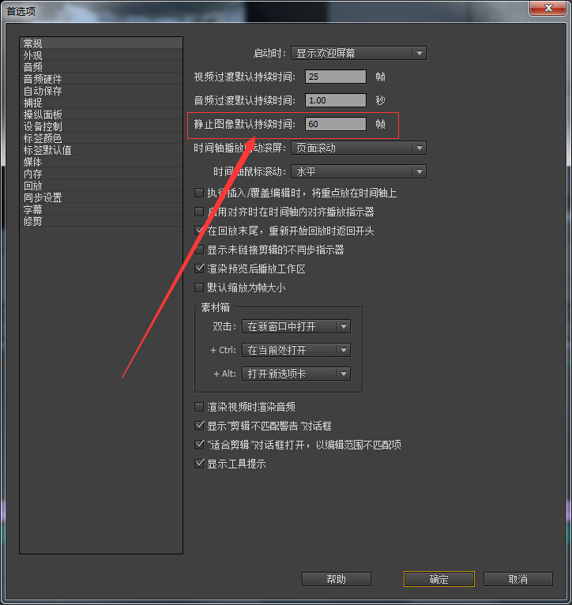
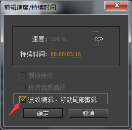
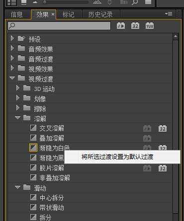
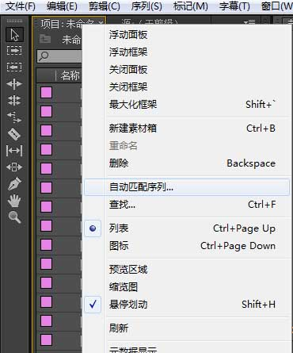

premiere制作电子相册之批量操作技巧
过年突然又要帮忙处理婚礼视频o(╯□╰)o 说实话premiere这东西，一年也难得碰两次，就像曾经为考试而生的英语一样
，每次翻出来，都得重新来一遍。好吧，这次就把一些关键点记录下来。
·电子相册播放时长
制作电子相册的时候，把图片拖到时间轴上会有一个默认的播放时长，这个时长可以在编辑->首选项->常规里的静止图像默认播放时间设置

当然，在开始的时候往往难以确定最终效果，那么在我们将素材放到时间轴上之后，可以选中要调整的片段，右键->速度/持续时间…，来设置时长。注意！如果选中多个片段，在缩减播放时间后片段之间会产生空隙，要避免空隙的话，在刚刚设置时长的对话框里，勾选上“波纹编辑，移动尾部剪辑”，这样点确定之后，各剪辑又衔接到一起了。

·批量添加转场效果
在效果栏里，右键要添加的效果，设为默认。

然后选中要添加的素材，在“项目”窗口右键->自动匹配序列…，确定后，素材自动导入时间轴并带有默认转场效果。如果要添加多种效果，那只能一个个的托了。

·素材处理
音频不支持MP3格式，mp3拖到时间轴是没有声音的。要转成wav才能导入。
视频如果尺寸很大，最好在编辑前用格式工厂缩小尺寸；除非电脑性能够强劲~ 另外，格式工厂也可以做视频的旋转。